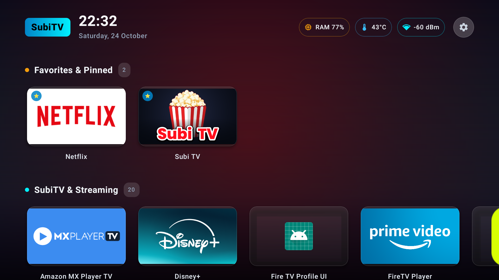
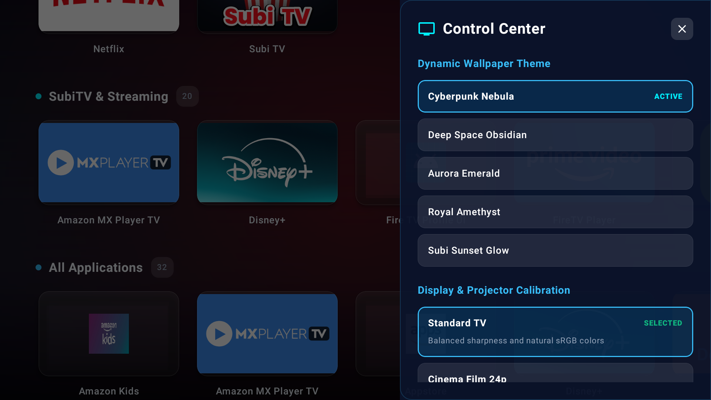

SubiTV Launcher
The ultimate sovereign home screen for Android TV and Amazon Fire TV. Engineered natively in Kotlin and Jetpack Compose for fluid, instantaneous D-pad navigation. Replaces intrusive stock home screens with pure speed, tvOS ambient color blooming, a real-time System Health HUD, and projector optical calibration.
Built for the Big Screen
Every detail crafted specifically for 10-foot television and projector experiences.





Projectivy DNA. Superior Performance.
All premium features unlocked out of the box with zero subscription fees.
Native Compose TV Engine
Written from scratch in modern Kotlin with Jetpack Compose for TV. Zero legacy Android View inflation overhead. Guarantees locked 60–120 FPS D-pad focus transitions and instant startup on low-power TV SoCs.
tvOS Dynamic Color Bloom
Our real-time palette engine extracts the vibrant dominant color of whichever app banner is selected, creating a soft, cinematic background glow that elevates your home theater atmosphere.
Live System Health HUD
Monitor your TV's vital signs right from the top bar: available RAM percentage, real-time SoC CPU temperatures in °C, and wireless signal strength (dBm) or wired Gigabit LAN status.
Slide-Over Glass Control Center
Press the Menu button on any TV remote to reveal the slide-out glass side panel. Switch wallpaper themes, toggle ambient bloom, or recalibrate picture modes without leaving your current feed.
Parental PIN Vault
Secure any individual app or streaming row behind a 4-digit PIN code. Keep sensitive apps and settings protected from children or house guests with custom D-pad friendly PIN dialogs.
Projector Keystone Suite
Includes dedicated projector alignment test patterns with 16:9 boundaries, center crosshairs, aspect ratio circles, and corner targets to dial in your projector focus and keystone geometry perfectly.
How to Install & Set as Default
Quick steps to get SubiTV Launcher running as your permanent home screen on Amazon Fire TV or Google TV.
Download & Install the APK
On your TV, install via the Downloader app by typing the short URL iamgreater.net/downloads/subitv-launcher-latest.apk, or push directly via ADB from your computer:
adb install -r subitv-launcher-latest.apk
Enable Accessibility Home Interceptor (Fire TV)
To trap the Fire TV remote Home button and return directly to SubiTV Launcher:
Go to Settings → Accessibility → SubiTV Launcher Home Interceptor and toggle it ON.
Alternatively, enable it via ADB:
adb shell settings put secure enabled_accessibility_services net.iamgreater.subitvlauncher/.services.SubiTvHomeInterceptorService
Customize Your Wallpapers & Display Profile
Launch SubiTV Launcher. Press MENU on your remote to open the Control Center. Choose your preferred wallpaper theme (Cyberpunk Nebula, Deep Space, or Aurora), enable tvOS ambient bloom, and enjoy clean, ad-free streaming!